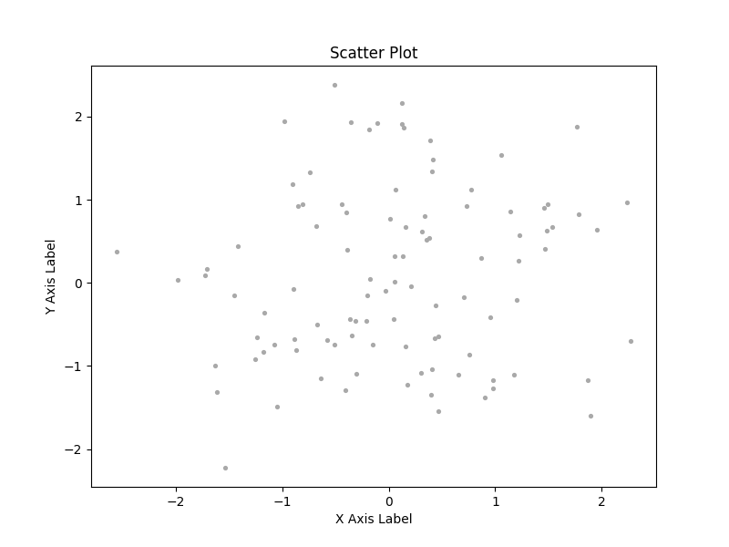

Note
Go to the end to download the full example code.
Scatter Plot#
Below is an example of how to plot a basic scatter plot using EMCPy’s plotting method.
import numpy as np
import matplotlib.pyplot as plt
from emcpy.plots.plots import Scatter
from emcpy.plots.create_plots import CreatePlot, CreateFigure
def main():
# Create scatter plot object
x1, y1, x2, y2 = _getScatterData()
sctr1 = Scatter(x1, y1)
# Create plot object and add features
plot1 = CreatePlot()
plot1.plot_layers = [sctr1]
plot1.add_title(label='Scatter Plot')
plot1.add_xlabel(xlabel='X Axis Label')
plot1.add_ylabel(ylabel='Y Axis Label')
# Create figure
fig = CreateFigure()
fig.plot_list = [plot1]
fig.create_figure()
plt.show()
def _getScatterData():
# Generate test data for scatter plots
rng = np.random.RandomState(0)
x1 = rng.randn(100)
y1 = rng.randn(100)
rng = np.random.RandomState(0)
x2 = rng.randn(30)
y2 = rng.randn(30)
return x1, y1, x2, y2
if __name__ == '__main__':
main()
Total running time of the script: (0 minutes 0.057 seconds)